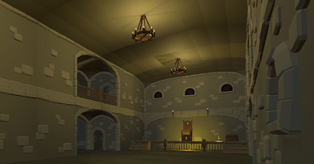
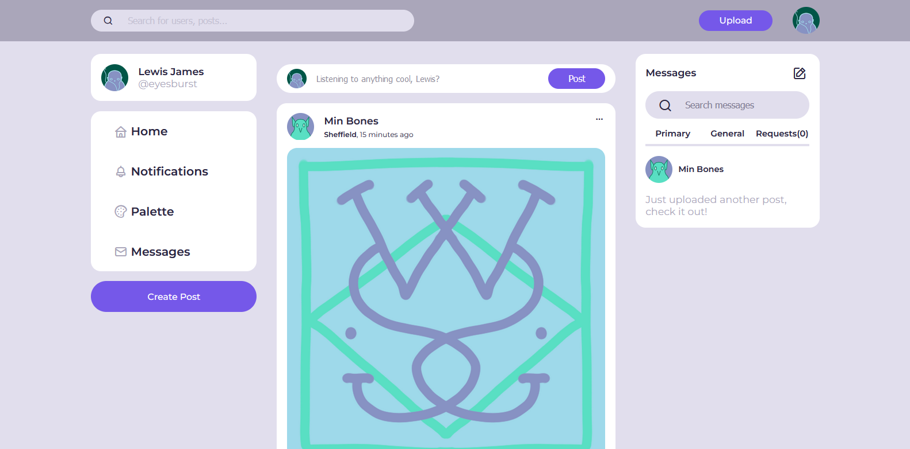

my-projects:$
Carbon Accountability - PHP Laravel
Made with PHP and the Laravel framework, I worked according to Agile Scrum methodology to develop frontend pages, web scraping technology to find targeted information for the organisation, and social media API integration to allow the client to interface with their Twitter and Mastodon accounts with any relevant collected information.
Roguelike - JS (Click to play!)
Made in JS, this is an improvement of a CLI roguelike made in C#. Features random map generation with a flood-fill algorithm, unique enemy behaviour to keep gameplay engaging, and relatively acceptable pixel art. Press Space to start, and WASD to move.
Crown Thief - Unity3D
Using Unity3D for my game dev module, this is a first-person stealth game with enemy FOV and patrol routes, an inventory system that lists collected loot, and multiple levels to traverse through and hide from enemies in! A fully realised project made in collaboration with local artist @mintybones. 
Music-Sharing Social Media Platform - JS
A social media platform made for sharing and discovering new music, connecting with other music lovers and getting recommendations. Made mostly with JS to develop my frontend skills. Created from start to finish, creating use case & ERD, wireframing and prototyping, as well as unit and acceptance testing. 
Python Automation - Image Recognition
Using OpenCV, it was possible to automate simple routines through the identification of specified image configurations. Usage is restricted.